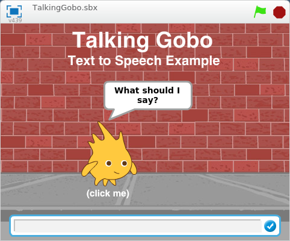

Contents
Introduction
This Scratch extension lets you generate text-to-speech output using the Web Speech API.
This means you can input a string of text and the computer will speak it back to you!
Example project where Gobo says what you type!
Getting Started
The Web Speech API is only supported by the Google Chrome web browser at this time.
To use the extension, make sure you have the latest version of Google Chrome installed and launch the text to speech extension on ScratchX.
Scratch Blocks
Enter a string of text to convert to speach.
Example Projects
- Talking Gobo
- Click Gobo and enter some text to make Gobo speak!